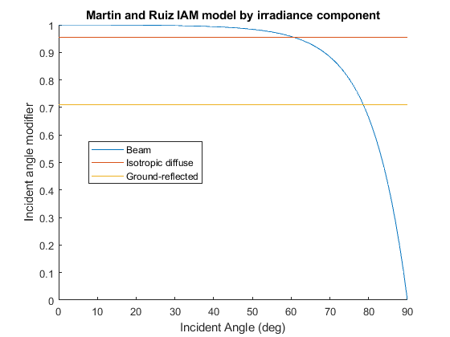

PVL_IAM_MARTINRUIZ_COMPONENTS
Calculate the reflection loss for direct beam, isotropic diffuse, and ground-reflected albedo light.
Contents
Syntax
- *[Rloss_Beam, Rloss_Iso, Rloss_Albedo] = pvl_iam_martinruiz_components(SurfTilt, AOI)
- *[Rloss_Beam, Rloss_Iso, Rloss_Albedo] = pvl_iam_martinruiz_components(SurfTilt, AOI, Rloss_Para)
Description
This model calculates the reflection losses at the air/glass interface of a solar module separately for direct (beam), isotropic sky diffuse and ground-reflected (albedo) irradiance. The model uses empirical equations developed in [1].
Inputs:
- SurfTilt - a scalar or vector of surface tilt angles in decimal degrees. If SurfTilt is a vector it must be of the same size as all other vector inputs. SurfTilt must be >=0 and <=180. The tilt angle is defined as degrees from horizontal (e.g. surface facing up = 0, surface facing horizon = 90).
- AOI - a scalar or vector of the angle of incidence of beam irradiance in decimal degrees. If AOI is a vector it must be of the same size as all other vector inputs. AOI must be >=0 and <=90. The angle of incidence can be calculated by pvl_getaoi.
- Rloss_Para - a three-element vector represents the parameters (in order, ar, c1, and c2) in the reflection models in Ref. [4]. By default a parameter set for a glass-faced silicon solar module, [ar = 0.16, cl = 4/(3*pi), c2 = -0.074], will be used.
Output:
- Rloss_Beam - A column vector with the same number of elements as any input vectors, which contains the reflection loss of the direct beam light.
- Rloss_Iso - A single value, the reflection loss of the isotropic diffuse irradiance.
- Rloss_Albedo - A single value, the reflection loss of ground-reflected irradiance.
Example
This example plots the IAM for glass over a range of incident angles.
SurfTilt = 30; % tilt from horizontal theta = 0:90; %incident angle in degrees [Rloss_Beam, Rloss_Iso, Rloss_Albedo] = pvl_iam_martinruiz_components(SurfTilt, theta); % convert from reflection loss to incident angle modifier. IAM_beam = 1 - Rloss_Beam; IAM_iso = 1 - Rloss_Iso; IAM_ground = 1 - Rloss_Albedo; figure hold all plot(theta, IAM_beam) plot(theta, repmat(IAM_iso, size(theta))) plot(theta, repmat(IAM_ground, size(theta))) legend('Beam', 'Isotropic diffuse', 'Ground-reflected', 'Location', 'Best') xlabel('Incident Angle (deg)') ylabel('Incident angle modifier') title('Martin and Ruiz IAM model by irradiance component')
References
[1] Martín, N., Ruiz, J. M. 2005. Annual angular reflection losses in PV modules. Progress in Photovoltaics: Research and Applications, 13(1), 75–84.
See Also
Notes:
pvl_iam_martinruiz_components provided by Xingshu Sun of Purdue University, 2018.